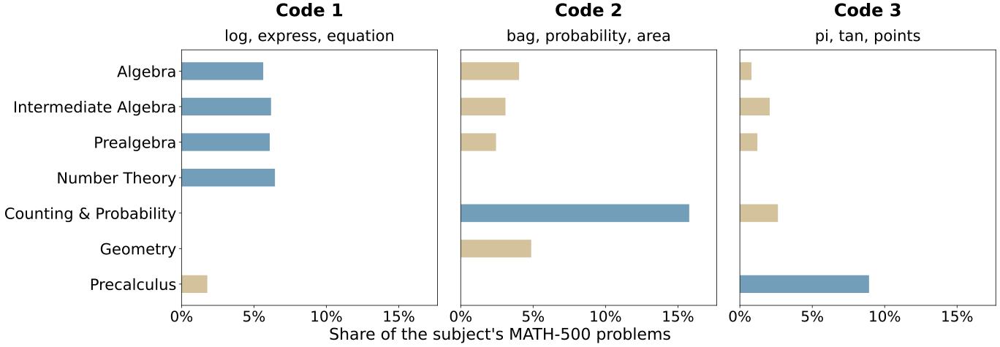

- Text encoder. A frozen pretrained transformer embeds the question.
- Bias encoder. A small MM-DiT attends jointly over the question and one learnable token per adapted layer.
- VQ decoder. Each layer's token snaps to the nearest entry in its own learned codebook and is decoded into that layer's bias update, so updates reuse a finite set of patterns.
Abstract
Long-form thinking traces can substantially improve the multi-step reasoning performance of large language models (LLMs), but they introduce high inference-time overhead, with latency dominated by sequential decoding. We propose HyperThink, a text-to-parameter approach that amortizes this reasoning computation into a single query-conditioned parameter update: a lightweight hypernetwork reads the question and predicts updates to a small subset of the base LLM's parameters, while a vector-quantized decoder constrains them to a finite set of reusable patterns to improve robustness and transfer. Trained end-to-end on outputs from the base model itself, HyperThink eliminates long thinking traces at test time: after one hypernetwork forward pass, the adapted model generates a concise step-by-step solution and final answer without an intermediate trace, using far fewer tokens while retaining strong reasoning performance. Empirically, HyperThink improves the low-latency region of the accuracy-latency trade-off on mathematical and general reasoning tasks, with its strongest gains in the near-non-thinking regime.
One Hypernetwork Pass Predicts a Compact Bias Update
A thinking model spends most of its latency writing a long trace before it answers. HyperThink moves that computation into the weights: a hypernetwork reads the question once and predicts a bias update Δθ for the frozen LLM, which then answers in a few short steps with no trace.
HyperThink is trained to match the LLM's answers after thinking; for Qwen3-0.6B, Δθ is just 0.015% of its weights.
Swipe sideways to see the whole figure
Improves the Low-Latency Trade-off
With Olmo-3-7B-Think, HyperThink reaches Pass@5 87.6 on CommonsenseQA and 89.5 on BIG-Bench Hard in 3.7 and 6.3 sec, close to full Thinking Mode's 88.0 and 90.5 at 41.4 and 80.6 sec. At similar latency, Thinking Mode reaches 80.1 (3.5 sec) and 71.2 (7.8 sec). HyperThink is also faster than Native Non-Thinking (5.7 and 9.7 sec), which scores 87.1 on both. The hypernetwork adds a single forward pass, so latency is set mostly by how many tokens the model writes. With Qwen3-0.6B on out-of-domain MATH-500, HyperThink reaches 73.4 at 15.6 sec, above every Thinking Mode budget at similar latency (61.5 to 64.8 at 15 to 17 sec); full Thinking Mode reaches 80.4 at 52.3 sec. Each panel plots Pass@5 against end-to-end latency on one NVIDIA H200 GPU, with Thinking Mode swept over token budgets.
Thinking Mode
Native Non-Thinking
System 2 Distillation
TokenSkip
HyperThink (Ours)
Beats Low-Budget Baselines, Even Out of Domain
The baselines also skip or shorten the trace: Native Non-Thinking, the model's built-in mode that answers without a trace; Budget-Controlled Thinking, which cuts Thinking Mode off at a token budget comparable to HyperThink's and forces an answer; System 2 Distillation, which fine-tunes the whole LLM on the same data and objective as HyperThink; and TokenSkip, which learns to compress the trace. Shown: SmolLM3-3B on GSM8K (trained on DeepScaleR) and Qwen3-0.6B on out-of-domain MATH-500 (trained on GSM8K). Across all 12 model and benchmark pairs in the paper, HyperThink beats Budget-Controlled Thinking on Pass@5.
In both settings shown, HyperThink is the closest to Thinking Mode, at 2.5× to 3.9× fewer FLOPs.
Bias Updates and VQ Both Improve MATH-500 Scores
Left (Pass@5): from System 2 Distillation (full fine-tuning) to biases shared across questions, then query-specific biases without VQ, then the full HyperThink. Right (accuracy): the same hypernetwork predicting Prompt Tuning tokens, LoRA weights, or biases. All runs use Qwen3-0.6B trained on GSM8K and tested on out-of-domain MATH-500.
On MATH-500, biases beat LoRA and Prompt Tuning, and VQ adds 6.5 Pass@5.
Each VQ Code Covers Related Math Subjects
Three representative VQ codes of HyperThink on Qwen3-0.6B. Each bar is the share of a MATH-500 subject's problems assigned to that code, each title lists the most frequent words in the problems assigned to it, and highlighted bars mark the subjects the code mainly covers.
The codes are learned with no subject labels, yet each one groups related subjects.

Same Answer as Thinking Mode, Without the Trace
A MATH-500 problem from the paper's appendix (Qwen3-0.6B); bar length shows each response's length in words.
HyperThink is fast like Native Non-Thinking, but correct like Thinking Mode.
For some real numbers a and b, the equation 8x3 + 4ax2 + 2bx + a = 0 has three distinct positive roots. If the sum of the base-2 logarithms of the roots is 5, what is the value of a?
Thinking Mode
long trace, then product of roots = −a/8 = 32
−256 ✓
Native Non-Thinking
product of roots = a/8 = 32
256 ✗
HyperThink
product of roots = −a/8 = 32
−256 ✓
Show HyperThink's full response
To solve the problem, we begin by analyzing the given cubic equation:
\[8x^3 + 4ax^2 + 2bx + a = 0\]
This equation is a cubic polynomial with real coefficients. The problem states that it has three distinct positive roots, and we are also given that the sum of the base-2 logarithms of the roots is 5. We are to find the value of \( a \).
Step 1: Use Vieta's Formulas
Since the polynomial has three distinct positive roots, let the roots be \( r_1, r_2, r_3 \). By Vieta's formulas, we can relate the coefficients of the polynomial to the roots:
- The sum of the roots: \( r_1 + r_2 + r_3 = -\frac{4a}{8} = -\frac{a}{2} \)
- The sum of the product of roots taken two at a time: \( r_1r_2 + r_1r_3 + r_2r_3 = \frac{2b}{8} = \frac{b}{4} \)
- The product of the roots: \( r_1r_2r_3 = -\frac{a}{8} \)
We are also told that:
\[\log_2(r_1) + \log_2(r_2) + \log_2(r_3) = 5\]
Using the logarithmic identity:
\[\log_2(r_1) + \log_2(r_2) + \log_2(r_3) = \log_2(r_1 r_2 r_3)\]
So:
\[\log_2(r_1 r_2 r_3) = 5 \Rightarrow r_1 r_2 r_3 = 2^5 = 32\]
Step 2: Use the Product of the Roots
From Vieta's formula, we know:
\[r_1 r_2 r_3 = -\frac{a}{8} = 32\]
So:
\[-\frac{a}{8} = 32 \Rightarrow a = -256\]
Final Answer
\[\boxed{-256}\]
Show Native Non-Thinking's full response
We are given the cubic equation:
\[8x^3 + 4ax^2 + 2bx + a = 0\]
and the condition:
\[\text{Sum of the base-2 logarithms of the roots} = 5\]
Let the roots be \( r_1, r_2, r_3 \), which are distinct positive real numbers.
Step 1: Use the fact that the sum of the logarithms equals 5
Recall that:
\[\log_2 r_1 + \log_2 r_2 + \log_2 r_3 = \log_2 (r_1 r_2 r_3)\]
So:
\[\log_2 (r_1 r_2 r_3) = 5 \Rightarrow r_1 r_2 r_3 = 2^5 = 32\]
Step 2: Use Vieta's formulas
We are given:
\[8x^3 + 4ax^2 + 2bx + a = 0\]
Let's write this in standard form:
\[8x^3 + 4ax^2 + 2bx + a = 0\]
Let's factor this as a cubic:
\[(2x + 1)(4x^2 + px + q) = 0\]
Expanding:
\[2x(4x^2 + px + q) + 1(4x^2 + px + q) = 0\]
\[8x^3 + 2px^2 + 2qx + 4x^2 + px + q = 0\]
Now group like terms:
- \( 8x^3 \)
- \( (2p + 4)x^2 \)
- \( (2q + p)x \)
- Constant term \( q \)
So:
- \( a = 2p + 4 \)
- \( b = 2q + p \)
- \( c = q \)
Also, from Vieta's formulas:
- Sum of roots: \( r_1 + r_2 + r_3 = -\frac{4a}{8} = -\frac{a}{2} \)
- Sum of products: \( r_1 r_2 + r_1 r_3 + r_2 r_3 = \frac{2b}{8} = \frac{b}{4} \)
- Product of roots: \( r_1 r_2 r_3 = \frac{a}{8} \)
But earlier we found:
- \( r_1 r_2 r_3 = 32 \)
So:
\[\frac{a}{8} = 32 \Rightarrow a = 256\]
Final Answer:
\[\boxed{256}\]
BibTeX
@inproceedings{kim2026hyperthink, title={HyperThink: Text-to-Parameter Hypernetworks for Efficient Reasoning}, author={Donggyun Kim and Jack Lu and Chanwoo Kim and Mengye Ren and Seunghoon Hong}, booktitle={Third Conference on Language Modeling}, year={2026}}